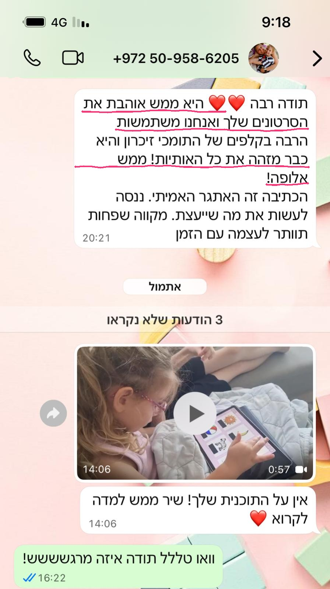
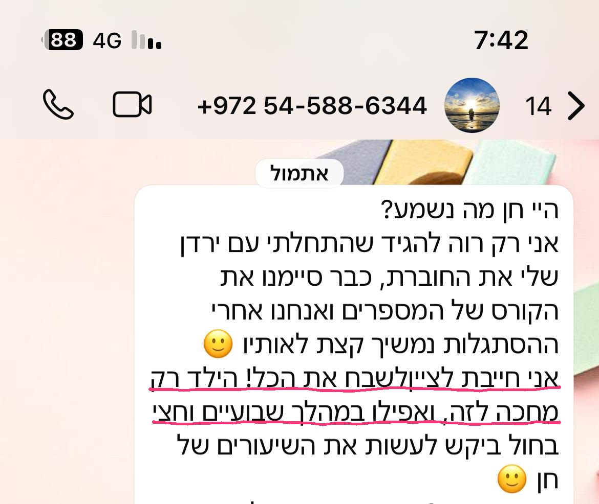
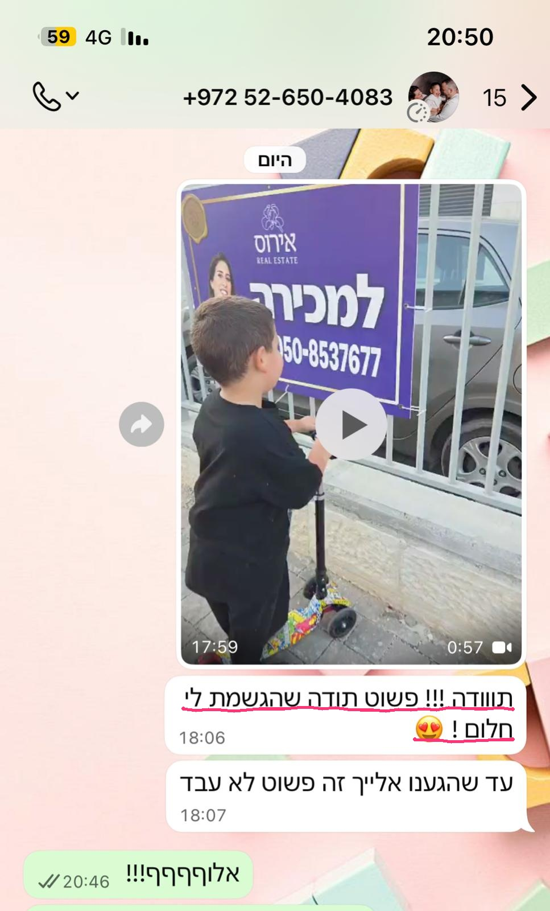

את הימים בהם ישבתי עם דניאל הבן שלי מול חוברות אחרי הגן,
ברקע אחים, כביסות ומשימות שלא נגמרות,
ואני אומרת לו: "הנה האות מ' זוכר?" והוא מסתכל עליי בעיניים ריקות.
🥺
אני חוזרת על זה שוב ושוב, הוא אפילו מעתיק אותה, אבל כשאני שואלת: "נו... אז איזו אות זו?"
הוא שוב לא זוכר ואומר "נ'".
כלום לא נכנס.
אני כועסת על עצמי שאני כועסת עליו ושלא ישבתי איתו מספיק וכועסת עליו שהוא לא מקשיב,
הגננת אומרת לי שיהיה בסדר, אבל כמי שכבר 11 שנים עובדת עם ילדים עם קשיים כקלינאית תקשורת, הבנתי שאני לא יכולה לקחת את הסיכון שהילד שלי יעלה לכיתה א' לא מוכן ובלי ביטחון עצמי כשהוא כבר עכשיו שונא ללמוד ואפילו לא התחלנו את ביה"ס!
📱
התחלתי לחפש שיטות אחרות, משהו שידבר אליו, כי לא רציתי להמשיך להכריח אותו ולסיים כל יום כשהוא מתוסכל ואני חסרת סבלנות ומלאת רגשות אשמה!
רציתי שזה יהיה קל
באות הראשונה שציירתי ובמשחק הראשון שיצרתי עבורו, כבר זיהיתי את הניצוץ בעיניים שלו.
הוא ישב מול הטאבלט, לפעמים מול המחשב, ופתאום הוא התחיל לבקש ממני לשחק,
הוא אפילו לא שם לב שהוא לומד!
"אמא, משחק אחרון נו פליז!"
😍
תוך כמה ימים הוא זיהה את כל האותיות ואחרי כמה שבועות כבר הקריא לסבתא שלו ספרים!
ובזכותו יצרתי את התוכנית הזו.
כי אני יודעת איך זה מרגיש כשאת רואה את הילד שלך נתקע, ואני יודעת כמה מרגש להיות זו שמשנה לו את החיים וגורמת לו לפרוח ולהגיע מלא ביטחון וביתרון לכיתה א'



בתמונה השנייה תראו גם את את האות "ק-קוף" שאותה אצייר יחד עם ילדכם בסרטון שבתוך המשחק של הכרת האותיות פ-צ-קואם תביטו בתמונה שבה אני מחזיקה את הערכה שתקבלו ובה קלפי האותיות שלי, תוכלו לזהות גם את האות "נ'- נו-נו-נו לנחש", את האות "ג'-גיבור (שהציל את התינוק הקטן שבכה בגן השעשועים),
ואחרי שהילד שלנו למד את האות, אנחנו נשחק איתו במשחק הדיגיטלי שיצרתי לכל אות, נשחק גם במשחקי תנועה על הדרך מתוך מאגר הרעיונות שתקבלי בשיעורים ונפתור דפים בחוברות שהותאמו במיוחד לתהליך, כך שכאשר הוא יפתור את הדפים הוא ירגיש שהוא רוצה להגיע כבר לכיתה ולהראות למורה את מה שהוא יודע ולא ישכח את שם האות לעולם!
(בשיעור 4 מתוך 15)
איך זה עובד?
כדי שילד שלא הצליח ללמוד את האותיות יצליח לעשות זאת, אנחנו צריכות ללמד אותו על-ידי תומך זיכרון שגם נראה כמו האות, גם נשמע כמו האות ולספר סיפור שהוא לא ישכח.
בתוכנית תלמדי איך להביא את הילד שלך לכיתה א' ביתרון, כשהוא מצליח לכתוב בקלות אותיות ומילים, עם אוצר מילים עשיר ומלא ביטחון עצמי ורצון ללמידה
(בלי חוברות עבודה ומבלי להכריח אותו ללמוד, בדיוק כמו עם דניאלי שלי)
שלבי התוכנית
1
המספרים
נכיר לו את כל הספרות בשיטה מנצחת כך שיזכור את שמן ויכתוב אותן בקלות
2
האותיות
הבסיס לכתיבה וקריאה מתחיל באותיות, נעבור אל 22 האותיות, 3-4 אותיות בשבוע + 5 האותיות הסופיות בשיטה שבה כל ילד זוכר
3
הצלילים
המודעות הפונולוגית קריטית לפיתוח מיומנויות אורייניות ובפרט לרכישת קריאה וכתיבה. בשלב זה נפרק מילים לצלילים, נבודד צליל פותח, סוגר, נבצע השוואה בין צלילים במילה ועוד
4
שפה וידע
בשלב זה נעשיר את הידע של הילד בתחומים שונים, נרחיב את אוצר המילים שלו ואת היכולת שלו להיות קשוב ולהבין הוראות ומיומנויות שידרשו בכיתה א'
5
קריאה וכתיבה
בשלב זה נחבר את הצלילים לאותיות עד שנגיע למצב שהוא ממש כותב משמיעה באופן עצמאי מילים חדשות ומזהה מילים על פי האותיות והצלילים
השיעורים הדיגיטליים נפתחים בהפרשים של שבוע כאשר תמיד ניתן לחזור לאחור
ובכל שיעור 5 רכיבים:
1
סרטונים לילדים
בסרטונים קצרים של עד 4 דקות, ילדך ילמד ע"י המחשות, סיפורים מצחיקים, דמויות ותומכי זיכרון אותם אלמד אותו בסרטון הממוקד בנושא השבועי, כך שהוא יזכור היטב מה שלמד מתוך החוויה, ההומור והשימוש בחושים.
מיד אחרי הצפייה בסרטון הוא יוכל להמשיך ולשחק במשחק הדיגיטלי אשר ימחיש לו את הנושא השבועי.
2
משחקים דיגיטליים
המשחקים הדיגיטליים יחכו לכם בכל שיעור והם אלו שמסייעים לילדים לרצות לחזור ולתרגל שוב ושוב ו...שוב!
המשחקים קצרים וממוקדים בנושא השבועי כך שילדך ילמד מבלי לשים לב שהוא לומד.
ניתן לשחק באמצעות הטלפון, הטאבלט, האייפד או המחשב ולחזור ולשחק במשחקי השיעורים הקודמים ללא הגבלה
3
ערכה פיזית לתרגול ומשחק
להשלמת החוויה ילדך יקבל ערכת הכנה לכיתה א' מעוצבת, כך שהמעבר מוויכוחים ללמידה באמצעות משחק יהיה משמעותי. הערכה תגיע אלייך עם שליח עד הבית כך שילדך יקבל מתנה שנשלחה במיוחד בשבילו, יפתח אותה בהתרגשות ויוציא ממנה מגוון של משחקים, קלפים, חוברות, קלמר וכל שאר האביזרים ויתרגש להתחיל
4
ליווי אישי וקבוצתי
הליווי האישי הוא אופציונלי למשתתפי התוכנית ויתקיים באמצעות קשר ישיר בוואטסאפ עם אופציה לפגישה בתשלום בזום או בקליניקה עד שהילד שלך יגיע לנקודת הפתיחה הרצויה
הליווי הקבוצתי יתקיים בקבוצת פייסבוק סגורה למשתתפי התכנית בה ניתן לשאול הכל וללמוד מאחרים
5
הדרכה להורים
הדרכה שבועית של כ-15 דקות להורה (מוקלטת מראש) לצפייה בזמנך. בכל הרצאה תצפי בהסבר על הנושא השבועי הכולל הדגמה של פעילויות רלוונטיות לשיעור, שיסייעו לך לנצל את הזמנים "על הדרך" בחיי היומיום
כמו עם דניאלי שלי, סוף סוף תשני טוב בלילה ותדעי שעשית מה שהילד שלך צריך
לא תתחנני ולא תשתמשי בכוחניות על מנת שהילד שלך ירצה ללמוד - הוא יבקש לבד!
הביטחון העצמי שלו יעלה והוא יחכה כבר לשבת בכיתה וללמוד
האווירה בבית תהיה נעימה יותר
את תגלי שהילד שלך לא שונא ללמוד! הוא אפילו אוהב, פשוט לא כמו שעשיתם עד עכשיו
את תדעי שעשית בשבילו הכל והצלחת למרות הכל
הוא יכיר וישלוף את כל האותיות הוא יכתוב ויקרא מילים לפני כיתה א'
הגננת לא תבין מי זה הילד החדש שהגיע - שמשתתף, מפגין את הידע שלו בביטחון וקולט מהר תכנים חדשים
מור סילבר - אמא לשלושה בנים
חן שמריהו - אמא של ניתאי ומחנכת א'
בונוס למשתתפי התוכנית
🎁 מארז הכנה לכיתה א' חלומי עד הבית 🎁
בהרשמתך תקבלי את המארז ובתוכו - חוברת הליווי להורים, שתאפשר לך להתקדם גם אם לא היה לך זמן לצפות בהדרכות המוקלטות. בחוברת תוכלי לקרוא את תקצירי ההדרכות ולעקוב אחר התקדמותכם בשלבים.
למי התוכנית מתאימה?
לאימהות עסוקות שלמרות זאת מוכנות להקדיש לילד 15 דקות בשבוע
לאימהות שעדיין לא יודעות איך ללמד את הילד שלהן קריאה ואותיות בדרך מהנה
לאימהות לילדים שאוהבים מסכים ומשחקים וחשוב להן שהילד שלהן יגיע לכיתה א' ביתרון
לאימהות שחשוב להן שהילד יתחיל את ביה"ס ביתרון כדי להעניק לו ביטחון עצמי ומוטיבציה
לאימהות שיש לילד שלהן קושי רגשי או חברתי או לימודי ורוצות שהילד יגיע עם ביטחון עצמי למרות כל אלו
לנשות חינוך שרוצות להביא דרך חדשה שתגרום לילדים ליהנות ולהצליח ולהורים להעריך את עבודתן הקשה
אני חן קלימיאן קלינאית תקשורת B.A
אני מטפלת ומאבחנת ילדים בגילאי 2-8 שנים, עובדת ומדריכה בגני חינוך מיוחד מטעם משרד החינוך ובעלת קליניקה פרטית. אני מרצה ומדריכה הורים, גננות וקלינאי תקשורת ולאורך 11 שנות עבודתי כקלינאית תקשורת מוסמכת עם רישיון משרד הבריאות, עזרתי למעל 20,000 משפחות להביא את ילדיהם לכיתה א' עם ביטחון עצמי ובנקודת הפתיחה הטובה ביותר עבורם.
הכל התחיל מהילדים הפרטיים שלי, אני אמא לארבעה, ביניהם דניאל המתוק עם הפרעת קשב וריכוז שלומד כיום בכיתה ו'. מכיוון שידעתי שיכולים לצוץ קשיים בביה"ס, החלטתי שאני אעשה כל מה שצריך כדי לקדם אותו ולהביא אותו ביתרון לכיתה א', כדי שילמד לקרוא בקלות ויראה שהוא טוב לפחות כמו כולם.
אבל... החלום שלי לא הצליח להתממש כי הוא שנא לשבת וללמוד. הוא הצליח לפתור בחוברות עבודה רק כמה דפים כי זה לא עניין אותו.
אז מה עשיתי?
ספרי לי עוד...
מה חושבות האימהות שהצטרפו לתוכנית?
שיר גמזו - אמא לשניים ומדריכת גננות
נופר ויטנר - אמא של ניר
שירן עבודיאן - אמא לשניים
ענת - אמא לארבעה
לפני התוכנית דורון היה ילד שלא הצליח ללמוד ארבע אותיות ותוך חודש וחצי הוא הפך לילד שהגננת המליצה עליו למבחני קבלה לבית הספר הכי טוב באיזור והוא עבר את המבחן בקלות!
שימוש במסך לפני גיל שנתיים אכן ידוע כמזיק ולכן בקורס הזה משתתפים ילדים רק מגיל 4 והשימוש במסך לאורך הקורס הוא מוגבל לפי מה שההורה מרגיש שנכון לילד שלו. מספיק לשחק במשחק הדיגיטלי פעם בשבוע והילד שלך ילמד את הנושא השבועי. תרגול ממוקד כמו שתיארתי הוא לחלוטין לא מזיק ואם כבר מתאפשר זמן מסך אז למה לא להמיר חלק ממנו לזמן חינוכי ואיכותי?
אין לי זמן לעצמי אז איך אני אתחיל ללמד את הילד שלי?
זה הילד שלך וזו האחריות שלך לעזור לו, וברור שזה קשה, גם אני אמא (ל-4 בנים שובבים), ומתרוצצת בין טיפולים ומשימות כי ככה זה, החיים הם לופ! אני בניתי את התכנית לאימהות כמונו, כי אם היה לך זמן כנראה שהוא כבר היה לומד את כל מה שצריך, אבל אין לך, ולכן בתכנית הכל קצר וממוקד כדי שתוכלי בזמן קצר למנוע מהילד שלך תסכול וחוסר ביטחון שיתגלגל לכדי קשיי למידה משמעותיים יותר ככל שהוא יגדל. זה הזמן, עכשיו המוח שלו גמיש ומוכן, ואת צריכה עכשיו להראות לו את הדרך ולעשות משהו חדש שישנה לו את החיים. תני לו הזדמנות.
אני חוששת שארכוש את הקורס ובסוף לא אשתתף
לא סתם כולם מדברים על תכנית הליווי שלי! היא כרטיס הביקור שלי. ההצלחה שלך היא ההצלחה שלי ואני הגעתי לעולם הזה עם שליחות! אני אדאג באופן אישי להצלחה של הילד שלך! בנוסף בדיוק בשביל זה הוספתי את חוברת המעקב וההדרכות המוקלטות לצפייה בזמנך.
בחוברת המעקב תמצאי טיפים ורעיונות לכל שלב וטבלאות מעקב פשוטות באמצעותן תוכלי לעקוב אחר ההתקדמות שלך, בנוסף לכך, לאורך הקורס אני יוצרת איתך קשר 3 פעמים לפחות. בתחילת, באמצע ובסוף התהליך ומספר הטלפון האישי שלי לשירותך עם מענה מלא כמעט בכל שעה ביום!
לא ממש הבנתי, איך מתפעלים את כל זה?
ברגע שתרשמי את תקבלי הודעת וואטסאפ ומייל ובהם כל מה שאת צריכה לדעת כדי להיכנס לתוכנית שלך. אל דאגה, המערכת מאוד פשוטה וידידותית למשתמש גם למי שאין לו מושג טכנולוגי. לאחר ההרשמה אני אוודא מולך שהתחברת, אוודא שהכל ברור ואשלח אלייך את הערכה.